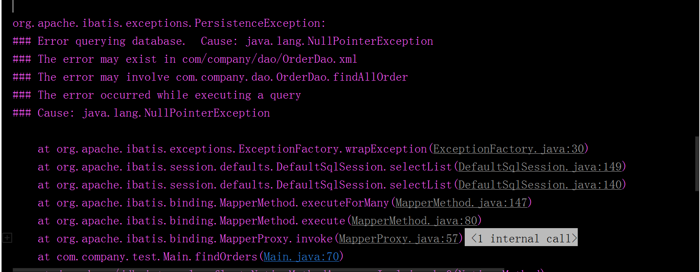
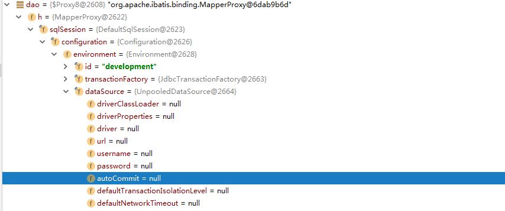
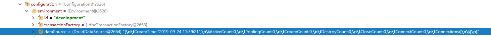
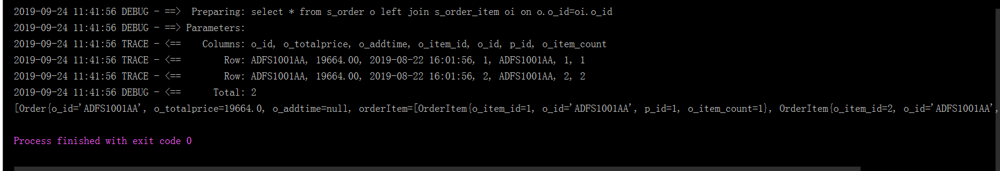

MyBatis空指针踩坑记录
MyBatis 空指针记录
自己封装数据源 DataSource 导致空指针异常
第一次使用 MyBatis 的动态代理方式生成Mapper接口实现类的时候，在自己封装数据源 DataSource 的时候踩坑了，config配置文件和dao配置文件都配置正确，但就是在调用dao类接口 进行sql查询的时候（例如 dao.findAll()），报空指针异常。如下图：

查了各个地方，配置文件都是正确的，最后无奈只能在错误位置断点调试，然后发现了一些问 题，看下图：

可以看到，configuration 对象里面，在 environment 对象中，dataSource 对象中的各种属性都是 null，数据库 url ，用户名、密码等等都是 null，这就说明 dataSource没有初始化，这是怎么回事呢？查询各种资料后，才发现自己把 UnpooledDataSourceFactory 类中的 dataSource 对象和自己封装的 dataSource 对象搞混了。看下面的错诶代码：
public class DruidDataSource extends UnpooledDataSourceFactory {
static DataSource dataSource = null;
static {
loadProperties();
System.out.println("初始化");
}
private static void loadProperties(){
try {
Properties property = new Properties();
ClassLoader loader = DruidDataSource.class.getClassLoader();
property.load(loader.getResourceAsStream("db.properties"));
dataSource = DruidDataSourceFactory.createDataSource(property);
} catch (Exception e) {
e.printStackTrace();
}
}
}
错误代码中，我自己添加了一个属性dataSource，这个名字刚好和 UnpooledDataSourceFactory 类中的名字一样了，导致datasource 是子类的，父类的代码是这样 的：
public class UnpooledDataSourceFactory implements DataSourceFactory {
private static final String DRIVER_PROPERTY_PREFIX = "driver.";
private static final int DRIVER_PROPERTY_PREFIX_LENGTH = "driver.".length();
protected DataSource dataSource = new UnpooledDataSource();
public UnpooledDataSourceFactory() {
}
...
}
那这就必须修改，初始化父类 dataSource ，修改后的代码如下：
public class DruidDataSource extends UnpooledDataSourceFactory {
static DataSource myDataSource = null;
static {
loadProperties();
System.out.println("初始化");
}
private static void loadProperties(){
try {
Properties property = new Properties();
ClassLoader loader = DruidDataSource.class.getClassLoader();
property.load(loader.getResourceAsStream("db.properties"));
myDataSource = DruidDataSourceFactory.createDataSource(property);
} catch (Exception e) {
e.printStackTrace();
}
}
//这里构造函数踩坑了，忘记初始化化 UnpooledDataSourceFactory 类的 dataSource 了，结果导致在 dao 调用
//dao.xml 文件进行 sql 查询的时候报空指针异常
public DruidDataSource(){
this.dataSource = myDataSource;
}
}
修改后就不会有错了。

